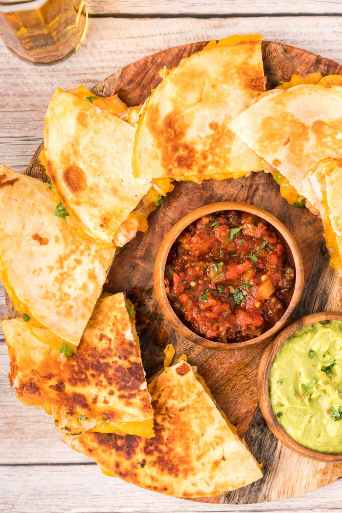

Home
Shrimp Quesadilla Recipe

Description
Jumbo seasoned shrimp with onion, bell pepper,
and melty cheese between crispy golden tortillas,
now that’s what we call a shrimp quesadilla!
Add a little flair to a regular cheese quesadilla with sauteed veggies and juicy shrimp.
This shrimp quesadilla recipe is packed with flavor and texture in every bite.
Between the juicy shrimp, tender bell pepper and onions, melty cheese, and crispy tortilla,
this one hits all the sweet spots and it comes together in a skillet in around 20 minutes.
Steps
- Season the shrimp with the Old Bay seasoning and 1/2 tablespoon of the garlic salt.
- Heat oil in a skillet over medium-high heat until shimmering.
- Add orange bell pepper, red onion, green bell pepper, and remaining garlic salt.
Cook until softened, about 4 minutes.
- Add seasoned shrimp and toss to combine. Cook until shrimp changes color, about 3-4 minutes,
stirring occasionally.
Remove mixture from pan and set aside.
- Wipe out pan with a paper towel and add 1 1/2 tablespoons of the butter.
Melt butter over medium-high heat, then add one tortilla. Add 1/4 of the shredded cheese,
1/2 of the cooked shrimp, 1/2 of the cooked vegetable mixture, and another 1/4 of the cheese.
- Place a second tortilla on top and press down. Cook until light golden brown and then flip over.
Cook another couple of minutes until golden brown. Remove from pan.
- Add the remaining butter to the pan and repeat the process for the second tortilla.
Enjoy!